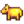

Volcano Dungeon

The Volcano Dungeon is located inside the volcano at the north end of Ginger Island, accessed through a large cave on the south side of the volcano. The dungeon consists of ten floors through which the player must proceed in sequence to reach the Forge, thereby "completing" the dungeon.
Entering the cave, the player faces a lava river, across which lies the Volcano Dungeon. On the west side of the entryway is a pool of water. On its east side is a gate, initially locked, with a button on the floor to the south through the gate, out of reach.
To cross the lava river and enter the dungeon, pour water on it with the watering can, creating a pathway to walk on. A steel (or higher) watering can is able to cover 5 squares in line, enough to build a bridge with a single tool use. The path remains for the length of the day, but disappears every night. After the player completes the dungeon, a parrot offers to build a permanent bridge in exchange for 5 Golden Walnuts.
Once across the lava river, the player can proceed north, past a few monsters and through the doorway, to enter the first floor of the dungeon.
Passage Through the Dungeon
Unlike the Skull Cavern or The Mines, the Volcano Dungeon does not have ladders for instant exits or descent through floors. Instead, the player must find the doorway that leads to the next floor on each floor. Exit from the dungeon is accomplished by retracing the path through the floors and up to the cave's entryway, except by means of Warp Totems or Return Scepter. A player who passes out at 2am in the Volcano Dungeon awakens the next day in the Island Farmhouse (or in the original Farmhouse if the Island farmhouse is yet to be unlocked) and the game deducts  2,500g from available funds.
2,500g from available funds.
Within the dungeon, the player will encounter a variety of monsters, and may find Mystic Stones or other mining nodes that yield Cinder Shards, gems, or ores (including iridium). Floor nine always contains a chest. Unlike the Mines or Skull Cavern, the game populates each floor with these items only once each day. Leaving and reentering the dungeon does not cause re-spawning on the same day.
Once the parrot appears on floor five, it can create a special dungeon exit (hole in the floor) for 5 Golden Walnuts. This exit takes the player outside to the east side of the volcano, next to the Parrot Express. Once outside, the player cannot reenter at floor five, but must start again by entering the cave.
Floor 10
The Forge is located at the end of the Volcano Dungeon.
There is also an open doorway in the southwest corner that takes the player back to the far side of the gate at the entryway to the cave. Once there, the player must step on the button on the floor to permanently open the entryway gate, allowing passage in either direction thereafter. Thus, completing the dungeon permits direct access to the Forge.
After the shortcut between Floor 10 and the Volcano entrance has been unlocked, 20 additional floor layouts can appear.
Monsters
The volcano dungeon holds a unique set of Monsters.
| Image | Monster | HP | Damage | Notes |
|---|---|---|---|---|
| Dwarvish Sentry | 300 | 18 | Has a chance to spawn when a crate is broken. May drop gems on death. | |
| False Magma Cap | 290 | 15 | Replicates the rock crab's behavior. Almost always drops a Magma Cap on death, and can occasionally drop Cinder Shards. | |
| Hot Head | 215 | 18 | At low HP or death, it becomes a bomb that will explode quickly. May drop Solar Essence on death. | |
| Lava Lurk | 220 | 15 | Shoots 4 fireballs that will travel through walls. May drop Bone Fragment or Dragon Tooth on death. Possible to kill when the Lava Lurk is within two spaces of the edge of the lava pool. | |
| Magma Sprite | 220 | 15 | May drop Cinder Shard on death. | |
| Magma Sparker | 310 | 15 | Can inflict Burnt debuff on player. May drop Cinder Shard on death. | |
| Magma Duggy | 380 | 16 | May drop Taro Tuber, Cinder Shard, or Mega Bomb on death. | |
| Tiger Slime | 415 | 23 | May drop Tiger Hat, Ginger, Taro Tuber, Pineapple Seeds, or Mango Sapling on death. |
Special Floors
Volcano Caldera
Floor 10 of the dungeon contains the Forge. Players can pay Cinder Shards to use various gems on their weapons and equipment, giving enhancements and enchantments. This floor has an exit to the volcano's entry in the southwest corner. Players can fish in the magma area to get Lava Eel, Trash, and the painting 'Physics 101'. There is a chest containing 1 Prismatic Shard upon the player's first visit, which does not respawn when taken.
Gated Doors
On some floors in the dungeon, the gateway to the next floor may be blocked behind a gate. The gate has small colored dots to indicate the state of the locks that control its opening: red for locked, green for unlocked. The gate opens once all dots are green, and the player can then move to the next floor.
The gate is activated by 1 to 3 pressure pads. Standing on the pad will push it downward making the red dot become a green dot. The player must search for all of these pads throughout the current floor to reach the next floor.
Mushroom Floors

In the Volcano Dungeon, mushroom floors are filled with Magma Caps and False Magma Caps, which will come to life and attack the player when they are close by. There are also mushroom husks that can be cut through like grass.
Islands
Some floors have islands surrounded by lava. Occasionally pressure pads, treasure chests, or useful mining nodes will spawn on the islands. To reach them, use the watering can to pour water on the lava and create a bridge. Fishing inside the dungeon is not possible.
Treasure
There are two types of treasure chests that can spawn randomly, common and rare. The chance for a chest to be rare is significantly higher on the 9th floor and is also affected by Luck.
Common Chests

Below is a list of all items that can be dropped from common chests.[1] The first common chest opened will also give a Golden Walnut.[2]
| Image | Name | Description | Quantity | Chance |
|---|---|---|---|---|
| Cinder Shard | You can feel a warm glow from within this stone. | 3 | 1/7* | |
| Golden Coconut | This is one tough nut to crack, but a professional might be able to break it open. | 1 | 1/7* | |
| Taro Tuber | Plant these in warm weather. Takes 10 days to mature. Grows faster if planted near a body of water. | 8 | 1/7* | |
| Pineapple Seeds | Plant these in warm weather. Takes 14 days to mature, and keeps producing fruit after that. | 5 | 1/7* | |
| Protection Ring | Stay invincible for a little while longer after taking damage. | 1 | 1/7* | |
| Soul Sapper Ring | Gain a little bit of energy every time you slay a monster. | 1 | 1/7* | |
| Dwarf Sword | It's ancient, but the blade never dulls. | 1 | 1/21* | |
| Dwarf Hammer | It emits a very faint whirring sound. | 1 | 1/21* | |
| Dwarf Dagger | It's ancient, but the blade never dulls. | 1 | 1/21* |
Rare Chests

Below is a list of all items that can be dropped from rare chests.[1] The first rare chest opened will also give a Golden Walnut.[2]
| Image | Name | Description | Quantity | Chance |
|---|---|---|---|---|
| Cinder Shard | You can feel a warm glow from within this stone. | 10 | 1/9* | |
| Mermaid Boots | Mermaid scales gives these boots a protective aura. | 1 | 1/9* | |
| Dragonscale Boots | These shimmering boots are extremely tough. | 1 | 1/9* | |
| Golden Coconut | This is one tough nut to crack, but a professional might be able to break it open. | 3 | 1/9* | |
| Phoenix Ring | Once a day, regain some health after being knocked out in combat. | 1 | 1/9* | |
| Hot Java Ring | Greatly increases your chance to find coffee drinks when slaying monsters. | 1 | 1/9* | |
 |
Deluxe Pirate Hat | Only the most infamous pirate could pull off this look. | 1 | 1/9* |
| Ostrich Egg | It may be the world's largest egg. | 1 | 1/9* | |
| Dragontooth Cutlass | The blade was forged from a magical tooth. | 1 | 1/27* | |
| Dragontooth Club | This club was crafted from a magical tooth. | 1 | 1/27* | |
| Dragontooth Shiv | The blade was forged from a magical tooth. | 1 | 1/27* |
*It is impossible to get a Golden Coconut from either chest before one is cracked. Therefore, the probability of obtaining other loot before one is cracked is 1/6 for items and 1/18 for the weapons in the common chests, while in rare chests it is 1/8 for items and 1/24 for weapons.
Metal Crates
This page or section contains unmarked spoilers from update 1.6 of Stardew Valley. Players may want to avoid or be cautious toward reading this article/section. |
All crates in the Volcano Dungeon, with the exception of the one closest to the Dwarf on Floor 5, will always contain one item from the following table:[3]
| Content | Chance |
|---|---|
| Nothing | 18% |
| 18.86% | |
| 6.86% | |
| 6.86% | |
| 6.86% | |
| 6.86% | |
| 6.86% | |
| 6.86% | |
| 3.29% | |
| 2.4% | |
| 2.4% | |
| 2.4% | |
| 2.4% | |
| 2% | |
| 0.89% | |
| 0.89% | |
| 0.89% | |
| 0.89% | |
| 0.89% | |
| 0.89% | |
| 0.89% | |
| 0.89% |
The crate closest to the Dwarf on Floor 5 will always contain one item from the following table:[3]
| Content | Chance |
|---|---|
| Nothing | 18% |
Magma Cap (gold-quality)
|
80% |
| 2% |
In addition, for all crates, if the crate wasn't empty and didn't contain Carrot Seeds, Summer Squash Seeds, Broccoli Seeds or Powdermelon Seeds, each of the following can be added:
| Content | Chance | Condition |
|---|---|---|
| 10% | Only 5 are available from crates | |
| 5% | Qi's Crop quest is currently active | |
0.005346 + (Daily Luck * 0.044), increased by a third if Book of Mysteries has been read.
|
Have seen cutscene saying Mystery Boxes can be found. | |
| Random cosmetic item | 0.3% | |
|  Golden Animal Cracker | 0.0015 * (1 + Daily Luck)
|
Farming Mastery has been claimed |
| One of the following, chosen at random: |
0.09% |
Note
The seed that drops depends on the season and date the player opens the crate.
| From | Till | Seed | Description |
|---|---|---|---|
| Plant in the spring. Takes 3 days to grow. | |||
| Plant in the summer. Takes 6 days to grow, and continues to produce after first harvest. | |||
| Plant in the fall. Takes 8 days to mature, and continues to produce after first harvest. | |||
| This special melon grows in the winter. Takes 7 days to grow. |
Golden Walnuts
Up to 17 Golden Walnuts can be obtained by mining or killing monsters in the Volcano Dungeon. In particular:
- Up to 5 Golden Walnuts can be obtained by breaking rocks.
- Up to 5 Golden Walnuts can be obtained by killing enemies.
- Up to 5 Golden Walnuts can be obtained by breaking metal crates. Until 5 are earned in this way, each metal crate broken has an 8% chance of containing a Golden Walnut.[3]
- 1 Golden Walnut is obtained from the first common chest opened.[2]
- 1 Golden Walnut is obtained from the first rare chest opened.[2]
Shop

On floor 5 of the dungeon, there is a dwarf that runs a small shop and a pool where the Player can refill their Watering Can. 3 crates are always present on this floor. Monsters cannot spawn here, but a Dwarvish Sentry can still spawn when a crate is broken. The crate closest to the dwarf has a different drop pool than the rest of the crates, including an 80% chance of containing a gold quality Magma Cap.[3]
It is not possible to trade with the dwarf without having the Dwarvish Translation Guide.
In addition to the standard stock, the shop also offers one of two Food items every day.[4]
| Image | Name | Description | Price | Day Sold/Chance of being sold |
|---|---|---|---|---|
| Cinderclown Shoes | These magic shoes belonged to a famous Dwarvish jester. | Every day | ||
| The Diamond Hunter | All stones have a chance to drop a diamond when mined by hand. | Every day | ||
| Cherry Bomb | Generates a small explosion. Stand back! | Every day | ||
| Bomb | Generates an explosion. Watch out! | Every day | ||
| Mega Bomb | Generates a powerful explosion. Use with extreme caution. | Every day | ||
| Roots Platter | This'll get you digging for more. | 50% | ||
| Super Meal | It's a really energizing meal. | 50% | ||
 |
Pink Bow | This huge bow makes quite a statement! | Every day | |
| Warp Totem: Island Recipe | A recipe to make Warp Totem: Island | Every day (until purchased) | ||
| Ginger Ale Recipe | A recipe to make Ginger Ale | Every day (until purchased) |
Secrets
- After achieving Perfection, a secret hat can be obtained by interacting with a red monkey in the Volcano Caldera.
- An Ancient Doll can be thrown into the lava in the Volcano Caldera to obtain a secret item.
Bugs
- No mail is generated when a player passes out at 2AM in the Volcano Dungeon.
- Sometimes, on Mondays, the chest containing a Prismatic Shard will respawn, allowing the player to obtain multiple Prismatic Shards easily through this method.
References
History
- 1.5: Introduced.
- 1.6: Added The Diamond Hunter book to shop inventory. Chance for Pink Bow to appear in Dwarf Shop's stock increased from 25% to 100%.
- 1.6.4: Added 20 new volcano dungeon layouts, which can appear after unlocking the shortcut between the caldera and the volcano entrance. The monsters in the volcano entry level are now randomized each day.